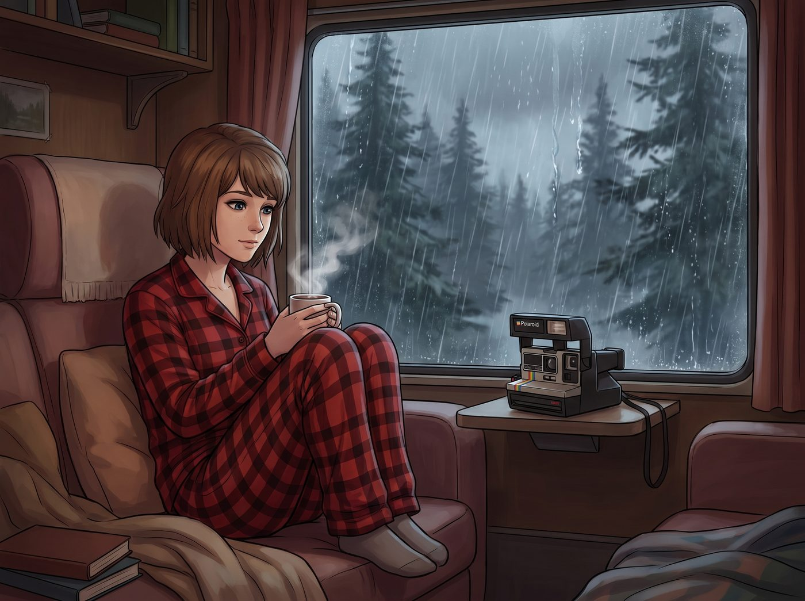

一級行政休眠狀態令

奧林匹亞半島的雨季通常是帶著詩意的濛濛細雨，但當太平洋的低壓槽死死卡在華盛頓州上空，連續整整一個星期的白天都在傾瀉那種類似於「上帝忘了關水龍頭」的暴雨時，二號車廂的浪漫濾鏡終於被徹底沖刷殆盡。
無休止的雨滴像密集的鼓點一樣瘋狂砸在金屬車頂上，車廂內的空氣濕度飆升到了足以讓肺部長出蘑菇的程度。
對於 Max 來說，這依然是完美的結界。她穿著厚厚的法蘭絨睡衣，整個人像一隻冬眠的貓一樣蜷縮在窗邊的單人沙發裡，喝著熱可可，聽著白噪音，偶爾舉起拍立得對著窗外模糊的冷杉林按下快門，享受著這份絕對封閉的安全感。
但對於車廂裡的另外兩頭猛獸來說，這簡直是物理與精神的雙重水牢酷刑。
一、被困住的野獸與崩潰的名媛
Chloe 已經在狹窄的起居廂裡來回踱步了整整三天。她手裡無意識地拋著一把生鏽的扳手，眼神狂躁得像一隻被關在動物園狹小鐵籠裡的美洲獅。
「這雨再下下去，我的皮卡底盤就要長出青苔了！」Chloe 暴躁地踢了一腳沙發，「我需要聞到機油味！我需要去公路上狂飆！」
坐在沙發另一頭的 Victoria 狀況更慘。名媛的抗壓防線已經被潮濕的空氣徹底擊穿。
「我的頭髮……我的法式波浪捲……」Victoria 絕望地抓著自己因為極度潮濕而毛躁得像獅子頭一樣的金髮，面前擺著三瓶昂貴的精華液，卻無濟於事，「這個濕度！我的愛馬仕羊絨毯現在摸起來就像一塊吸滿了水的洗碗海綿！Caulfield，妳能不能發揮一下妳的超能力，把時間倒轉回夏天？」
「我的超能力不管天氣預報，Victoria。」Max 慵懶地翻了一頁雜誌，「而且我覺得現在這樣挺好的，有一種末日倖存者的溫馨感。」
Chloe 煩躁地抓了抓藍色的短髮，轉頭看向廚房，試圖尋找往常的心理慰藉：「Kate！去烤點妳拿手的肉桂捲或者蘋果派吧！這見鬼的天氣需要一點碳水化合物來拯救！」
然而，廚房裡冷鍋冷灶，沒有任何香氣傳來。
二、聖光熄滅與合規休眠
Chloe 和 Victoria 順著視線看過去，震驚地發現，二號車廂的兩大精神支柱——永遠勤勞的小天使 Kate，以及永遠在翻閱法規的實習生 Lily，此刻正並排躺在靠近暖氣機的日式被爐裡，宛如兩條失去生命體徵的鹹魚。
「烤不了了，Chloe。」Kate 從厚厚的棉被裡探出半個腦袋，眼神迷離，平時那 90% 的聖母光輝此刻已經徹底被「懶蟲」吞噬，「車廂裡的相對濕度超過了 85%。麵團會過度吸水，酵母的發酵曲線會被完全破壞。這是不可抗拒的自然規律，我們只能順應天意，躺平吧。」
Victoria 不可置信地瞪大眼睛：「Kate Marsh？那個每天早上七點起床做禮拜和早餐的 Kate Marsh，居然說要躺平？！」
「冰箱裡有微波爐通心粉，Victoria，妳可以自己按一下加熱鍵哦。」Kate 溫柔地打了個哈欠，重新把頭縮回了被子裡，「上帝在第七天都休息了，連下七天的雨，這一定是祂在暗示我們也該關機維護了。」
Chloe 絕望地轉向另一個本該維持秩序的人：「Lily！妳不管管嗎？車廂裡的行政效率已經降到零了！」
平時總是端坐在工作台前的 Lily，此刻正裹著一個印著小熊圖案的羽絨睡袋，只露出一副圓框眼鏡。
她沒有翻開那本可怕的黑色筆記本，而是用一種極度理直氣壯的、軟糯的聲音宣布了合規的死亡：「Price 學姐，根據極端氣候下的工作環境指南，當室內氣壓過低且缺乏自然光照連續超過 72 小時，員工有權啟動法定心理健康防禦機制。」
Lily 在睡袋裡蠕動了一下，找了個更舒服的姿勢：「因此，作為本車廂的行政主管，我已經正式簽署了《一級行政休眠狀態令》。在雨停之前，所有非致命性的家務、審計與烹飪活動全面凍結。您現在看到的不是懶惰，而是我正在嚴格執行合規性的生理節能程序。」
三、最終的妥協
車廂裡死寂了一分鐘，只剩下窗外連綿不絕的雨聲。
Chloe 手裡的扳手滑落到了地毯上。Victoria 看著微波爐，又看了看那兩個在被爐裡安詳休眠的「神聖不可侵犯實體」，徹底放棄了掙扎。
「Max，」Chloe 生無可戀地拖著腳步，一頭栽進 Max 的沙發裡，把下巴擱在她的肩膀上，「往裡面擠擠。既然她們都合法冬眠了，老娘也不幹了。」
Victoria 咬著牙，屈辱地從冰箱裡拿出兩盒速食通心粉塞進微波爐，然後抱著那條潮濕的愛馬仕毯子，硬是擠進了 Kate 和 Lily 的被爐裡，發出了一聲破罐子破摔的嘆息：「如果這場雨讓我得了風濕，我就把華盛頓州氣象局告到破產……」